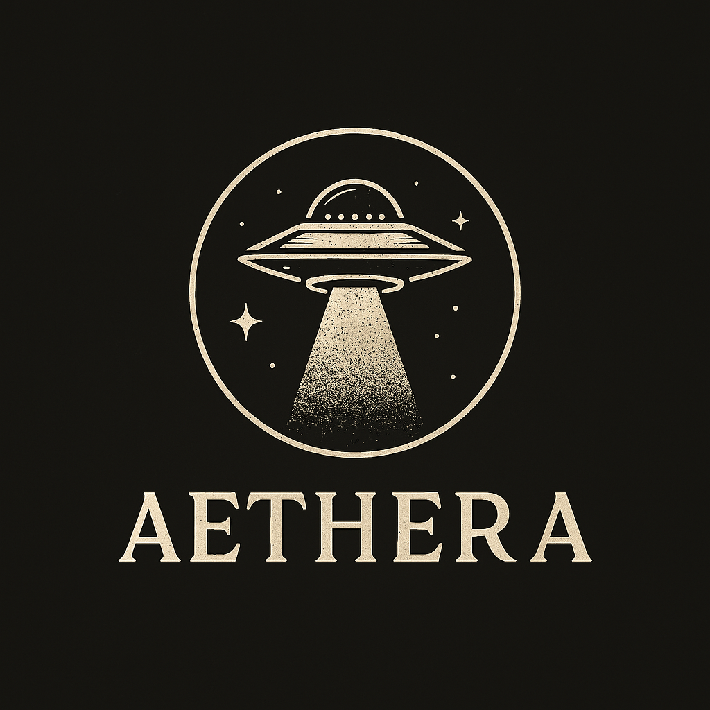

BUREAU AGENCE AETHERA – ARCHIVES X-FILES
CLASSIFICATION : SÉRIE MYTHIQUE
X-Files – S01E06 : Shadows
Classification : Phénomène Poltergeist / Entité Protectrice
1. Résumé opérationnel
Mulder et Scully enquêtent sur la mort mystérieuse de deux hommes retrouvés étranglés… par une force invisible. Ils croisent la route de Lauren Kyte, une secrétaire traumatisée par le récent décès de son patron. Les événements révèlent qu’une présence surnaturelle semble la suivre et la défendre violemment.
2. Détails clés et indices importants
- C’est un épisode de revenant protecteur, une variation sur le thème du fantôme loyal.
- Le patron décédé, Howard Graves, revient non pas pour se venger, mais pour protéger Lauren et révéler la vérité sur sa mort.
- Scènes clés : l’ascenseur bloqué, la salle d’interrogatoire agitée par une force invisible, la baignoire remplie d’eau sanglante.
- Scully reste sceptique mais réceptive ; Mulder montre une ouverture calme au paranormal.
3. Symbolique et ambiance
Plus émotionnel qu’horrifique : il parle de perte, de protection, de justice post-mortem.
4. Citation forte
“Some things are better left unexplained.” — Dana Scully
5. Observations Zed
Exploration des énergies résiduelles, des entités non hostiles, et des récits tragiques persistants.
